哈萨克斯坦国际交流｜中亚市场考察与中国企业出海合作
Hefei–Almaty outbound class on the ground in Central Asia — decoding a new paradigm for Chinese enterprises going global.
5月29日，和君商学院出海班相聚哈萨克斯坦阿拉木图。立足中亚一线市场，共同解码中企出海中亚全新范式。
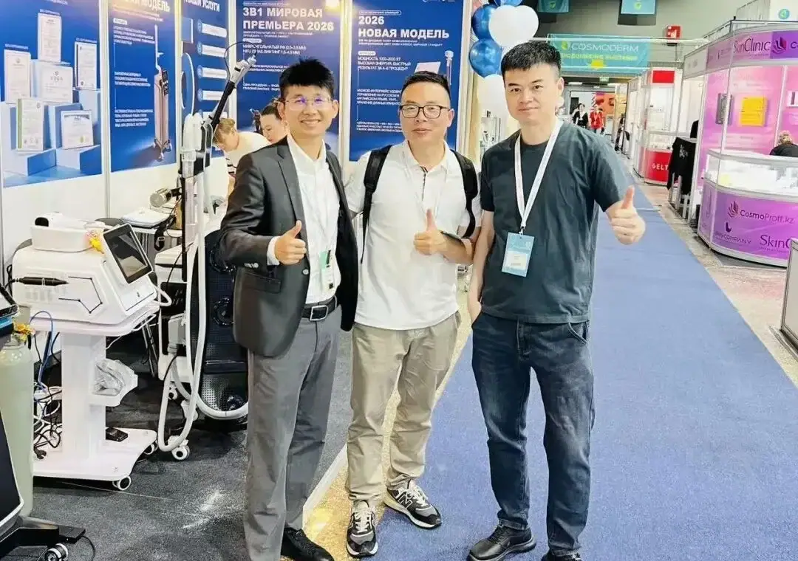
19届出海班导师张光辉、18届出海班校友武群伟、张立昂。
深耕本地市场调研的张光辉老师提出核心判断：哈萨克斯坦从不是出海终点，而是贯通中亚、辐射欧亚的核心通道。 随着中亚市场机会窗口全面开启，结合本次实地考察，我们梳理出适配本地美业的落地路径与创新营销打法， 为中国品牌入局中亚、扎根拓业提供清晰方向。
张立昂：哈萨克斯坦商业环境优势突出且潜力十足。全球营商环境排名第25位，税制优化 （企业所得税低至20%，特区享十年免税）、外资注册简化，叠加欧亚经济联盟与"一带一路"区位红利， 能源、新能源、电商领域成投资热点。
不过仍存挑战：部分行业外资持股受限，行政流程偏慢，坚戈汇率波动及基础设施短板可能影响运营， 需依托本地资源降低合规风险 。
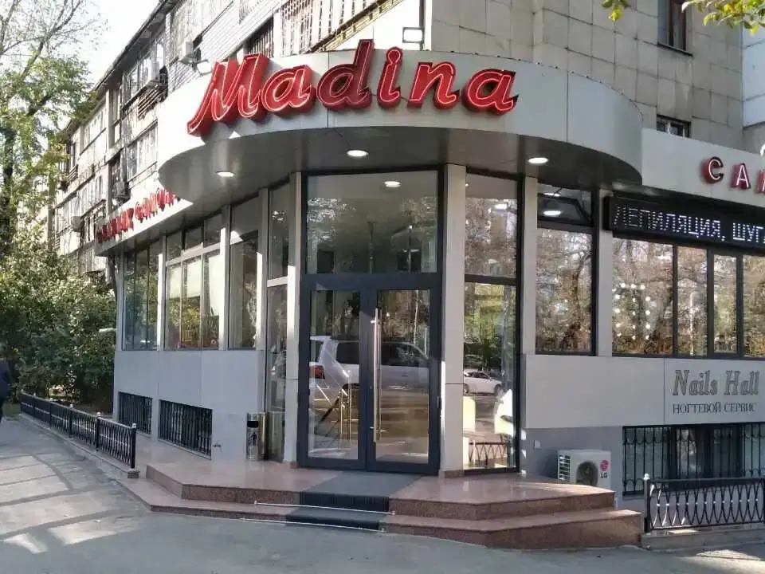
【核心业务方向】
- 借势造势：调研本地医美市场数据，打造差异化竞争方案，落地品牌入局；
- 供应链引入：业务启动后，导入国内成熟的产品、供应链及标准化培训体系；
- 达人赋能：签约孵化本地中小博主，依托本土流量实现精准转化。
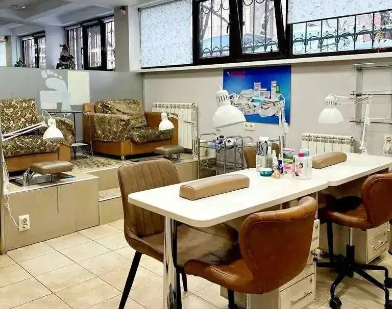
【创新营销打法】
- 反向跨境引流：联动中亚博主，推出中国医美地接返佣服务，邀约博主赴华打卡溯源，打造跨境流量闭环；
- 拼单精准获客：复刻国内成熟拼单社群模式，搭建美业专属平台，高效沉淀精准客群。
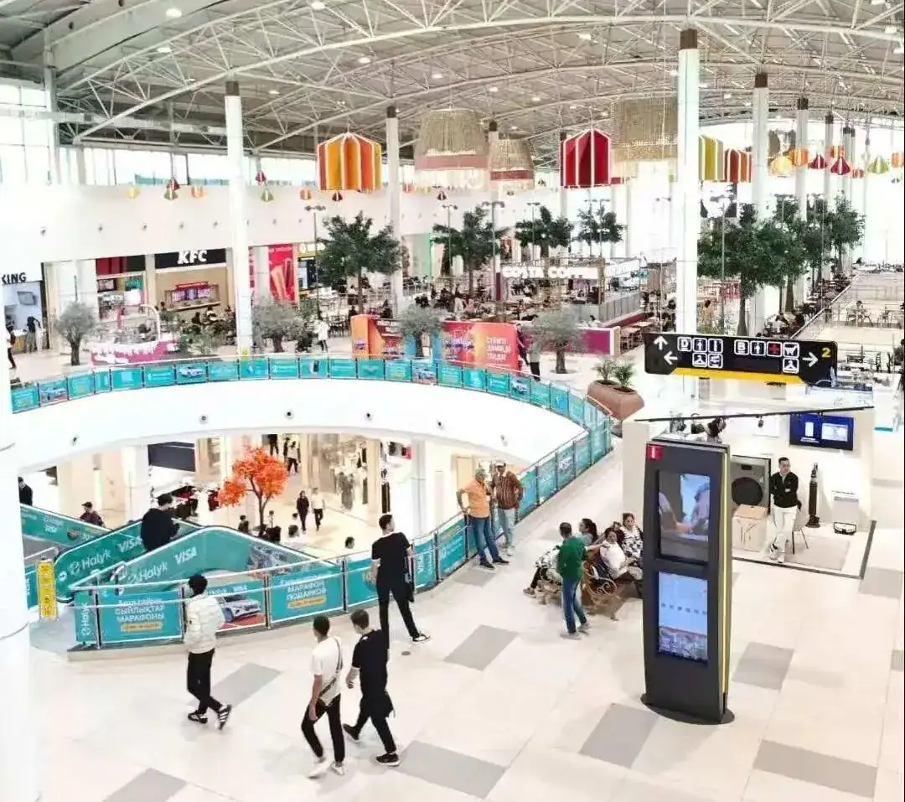
壹·中亚跳板 —— 哈萨克斯坦的机遇与落地逻辑
【分享人·武群威】和君商学18届出海班班长、19届辅导员；10年工作及创业经历；哈萨克斯坦国立大学博士
身在哈萨克斯坦，你将亲身经历一个正在醒来的市场。作为中亚最大经济体，哈萨克斯坦凭借独特地缘位置、 稳定对华关系和开放市场环境，正成为中国企业"出海中亚"的核心跳板。此外，哈萨克斯坦人口约2045万， 劳动年龄人口占六成以上，年轻消费群体为市场注入活力，潜力无限。
中哈关系的稳定性是罕见的。托卡耶夫总统通晓中文，多次强调中哈永久全面战略伙伴关系。 这种政治互信，为企业提供了可预期的安全环境。
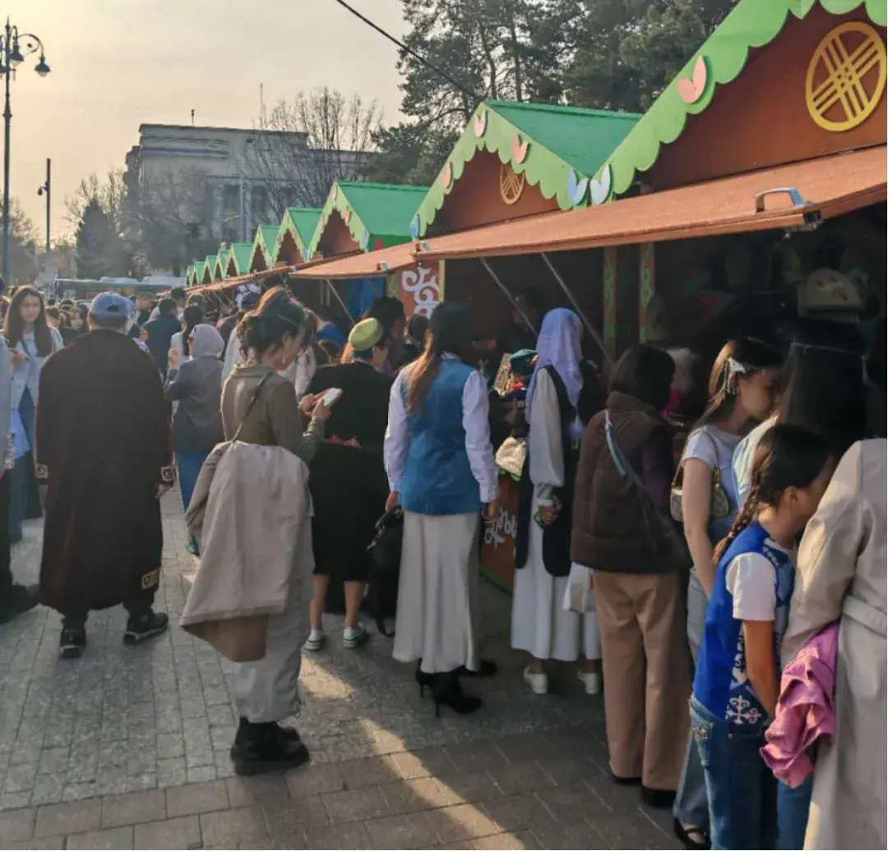
更重要的是，政策红利正在具体化。"公正的哈萨克斯坦"战略为外资提供土地优惠、最长15年税收减免。 在农业领域，引入中国农机可获30%补贴；数字经济园区为跨境电商提供一站式服务。 这些不是纸上条文，而是可计算的商业变量。
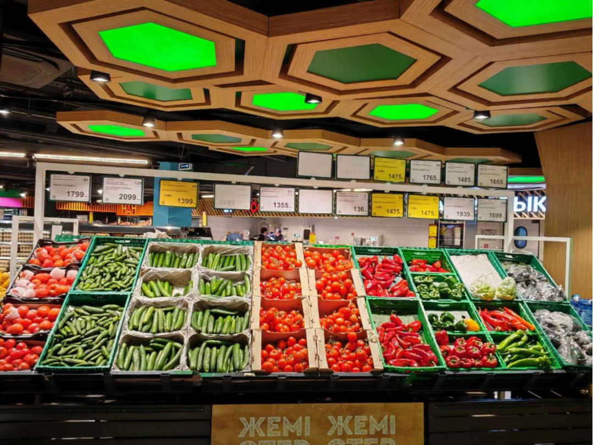
当你真正走入市场，会发现华人服务网络已悄然成熟。从阿拉木图到阿斯塔纳，商务翻译、银行开户、 税务登记可实现"一站式"办理。圆通与哈邮政共建的分拣中心，将电商包裹配送压缩至一周内。落地的门槛，正在迅速降低。
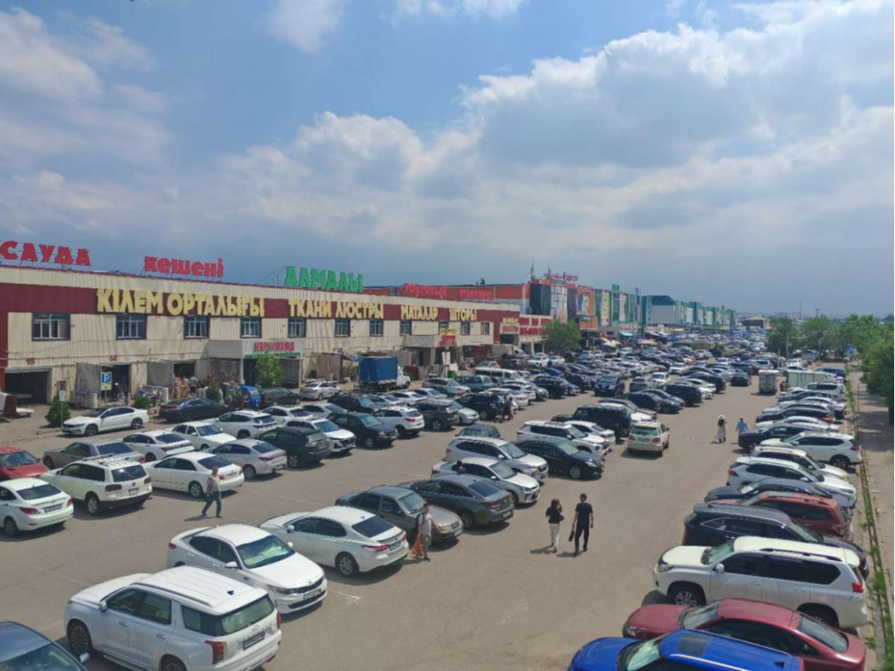
市场呈现双重格局：大项目聚焦能源基建，如札纳塔斯风电、阿拉木图光伏；但日常消费中也蕴藏着巨大机会： 因气候传统农业技术原因，当地果蔬价格明显高于国内，汽修配同样利润空间巨大。 中国制造占中亚进口比重逐年攀升，市场增长机会不断涌现。
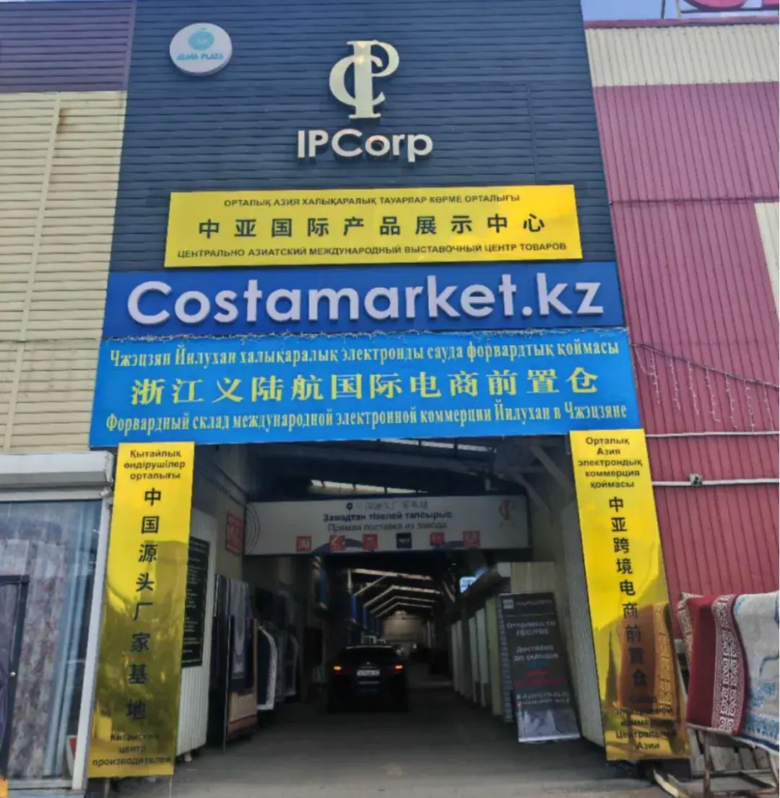
当然，语言文化差异、漫长账期、繁琐流程仍是挑战。但正是这些"不适区"，筛掉了投机者， 为愿意深耕的企业留出了空间。这里的商业逻辑最终指向长期主义：尊重本地文化，建立可持续合作， 才能在这片7600万人口的中亚大市场，找到长期价值。
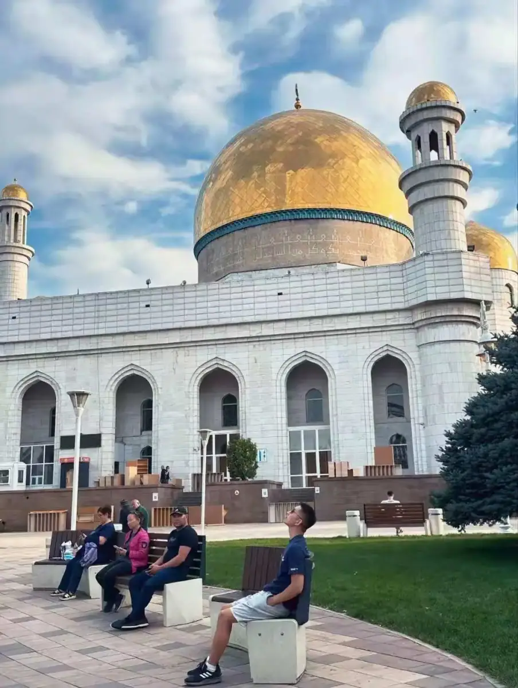
贰·去了趟哈萨克斯坦 —— 这里的美业正处于黄金十年
【分享人·张光辉】哈中文化和旅游发展促进会中国负责人；中教易尔联合创始人、中亚市场资源对接；和君商学院19届出海班导师
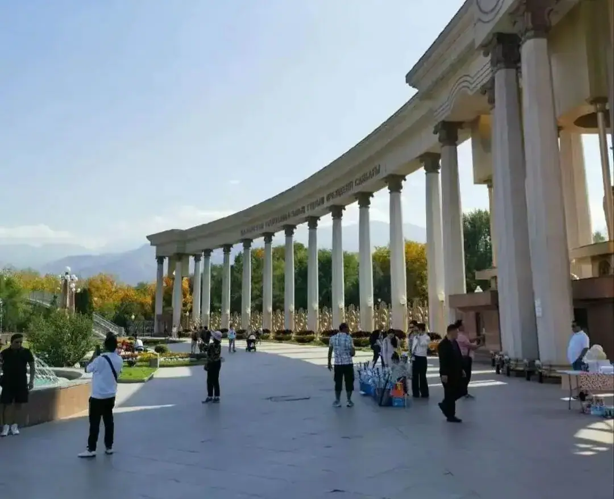
说实话，没去阿拉木图之前，我一直觉得中亚可能还停留在上个世纪，结果这趟跑下来，真的被硬生生打脸了。
下飞机的第一感觉就是：这地方太"年轻"了。走在街上，满眼都是二十来岁的年轻人，后来查了资料才知道， 哈萨克斯坦 60% 以上的人口都是年轻人。他们对美、对时尚的追求，那种劲头儿一点不比北上广差 。
最让我受刺激的，是那家叫 Mega 的购物中心。我当时就站在收银台旁边看，那人流密集程度简直离谱， 日均客流量能超过 5 万人。最夸张的是，收银台前一直在排长队，这种实体店火爆到让人"咋舌"的场景， 在国内真的好久没见过了。我当时就在想，这些年轻人排队买的，可全都是从外面进口来的美妆护理产品， 光 2024 年这一项的进口额就到了 4.5 亿美元。
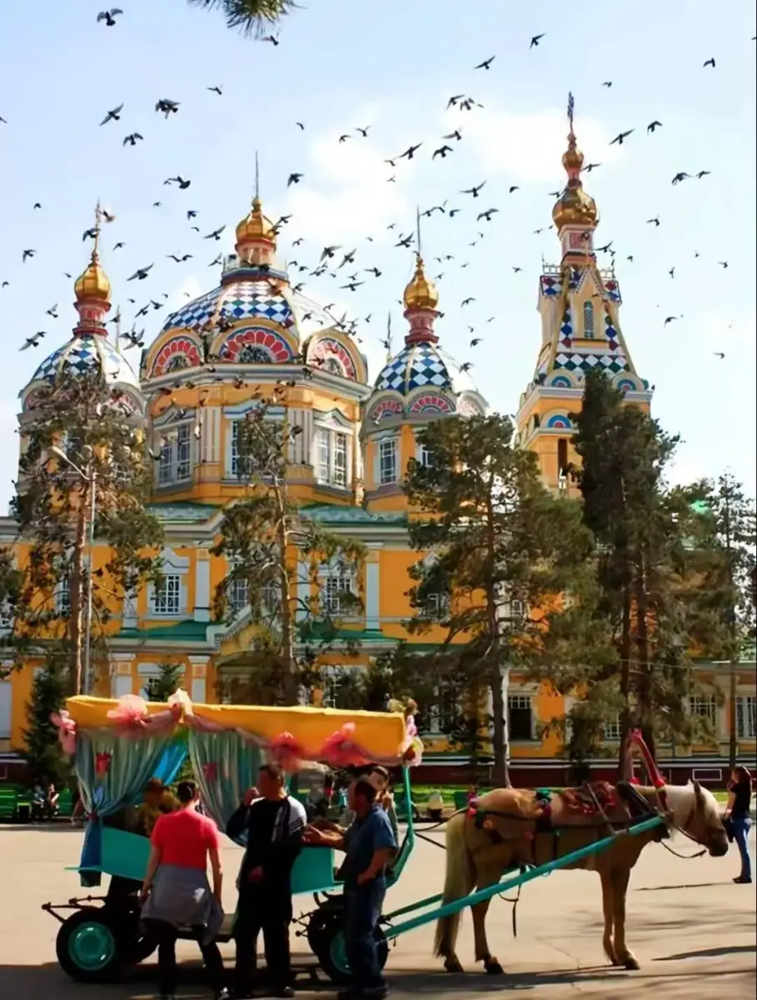
这趟行程里，有几个地方让我印象特别深：
- 阿塔肯特会展中心 (ATAKENT EXPO)：我去的时候正好赶上国际美发展，里面挤满了 30 多个国家的参展商。我特意在医美设备馆和天然原料馆转了很久，发现当地人对中国品牌极其认可，性价比高是一方面，关键是适配性好，增速已经超过了 15%。
- 圣天大教堂：就在潘菲洛夫公园里，那是世界第二高的木制教堂。据说当年大地震时，整座城市都快平了，就它奇迹般地挺住了。站在那种沙俄时期的圣像画前，确实能感受到一种厚重的历史感。
- CuM 步行街：很有意思的百年老街，路边随处可见画油画的、拉民族乐器的艺人。在那儿喝杯咖啡，看街头表演，真的能感觉到丝绸之路那种草原文明和现代商业交织的独特味儿。
这次回来整理考察照片，我心里一直感慨：阿拉木图坐拥这么优质的消费市场，本地美业供应却依旧处于 "供不应求"的状态。功效护肤、专业美发设备、轻医美赛道，基本还是一片蓝海真空。
我向来务实，与其在国内红海内卷，不如深耕海外优质赛道。所以5月底，我亲自带队重返阿拉木图实地深耕。
此行我通过哈中文旅促进会，对接了当地多家美业连锁头部老板，深入门店一线面对面交流调研，沉浸式摸清真实市场。
未来，在哈萨克斯坦，不看风景、只探商机，将组织常态化考察，吃透最真实的中亚生意逻辑。
本文内容整理自海鑫汇活动记录，首发于海鑫汇官方公众号（2026年5月）。 查看公众号原文 →